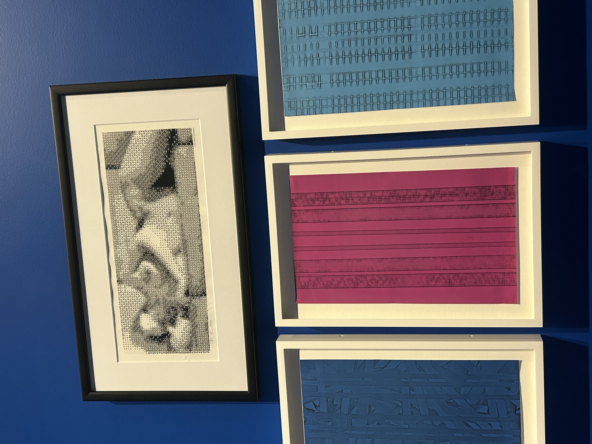
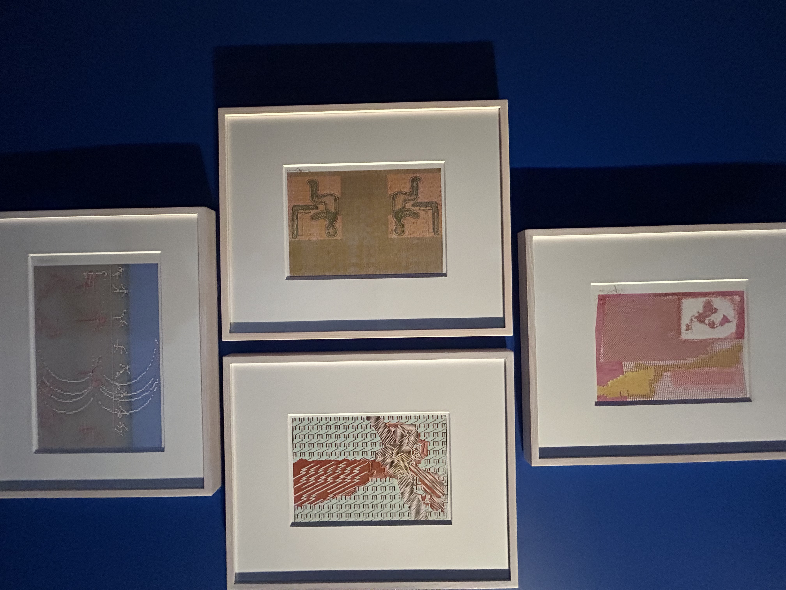
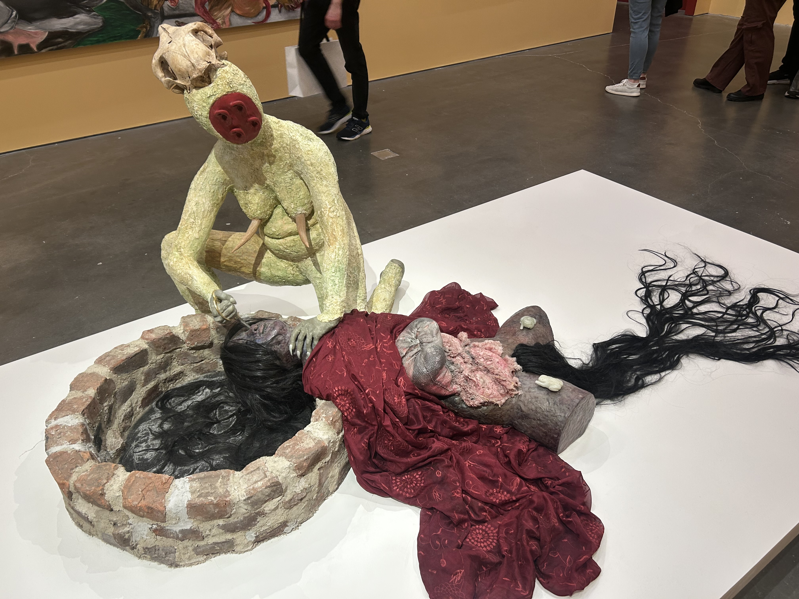
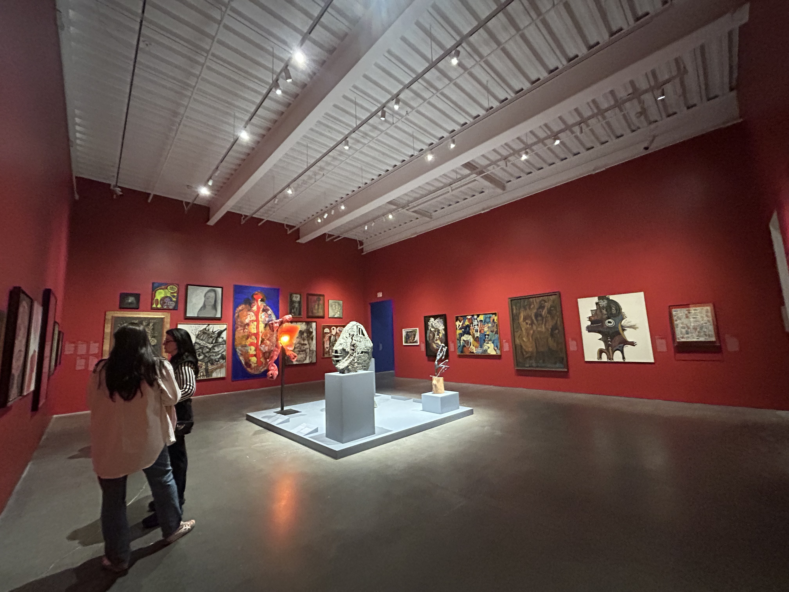

I went to the New Museum, that just opened 3 weeks ago, today. I love going to art museums, but I felt like I had seen all the major ones in NYC. So a new one felt so exciting. It was incredible. I don't know if part o this was curated by the students at the New School, because it felt on the pulse. First, I walked up to the fourth floor. There is psychadelic body horror on the walls of the staircase. The first room has a giant floating alien. You turn the corner to see a dismantled baby doll hanging over a room of robots and the alien from the movie alien. In my head it felt like the walls were bright pink with green floors. I don't think that's true, but it was the vibe I got. Looking closer, it was a curated exhibit exploring the future, robots, and AI. Many pieces discussed uncanny valley, and it was just uncomfortable to watch the artist interact with a human-looking robot. Other pieces dissected the human body in a way that felt analytical, like it's a drawn out plan for the robots. Over the exhibit, there were macro pictures of the folds of human skin. The pictures spanned the height o a whole museum wall. It was so well done, but it still felt light hearted, because it was just presenting you with the facts of technology. Outside there was a model future city, that took up most of the floor. It also felt silly, because normal materials were used, the signs were drawn with marker, and there were a lot of bright colors.
The museum also broke down the floors by generations. The top floor explored future technology, the last floor explored the history of technology, and the middle bridged the gap.

The middle floor is really what felt the most genius. Because the top floor explored uncanny valley, the middle floor looked at what it meant to be human. It was more traditional- still not "traditional" because it was abstract and weird- oil paintings. At the beginning there is a homunculi, which is a little sculpture of a guy, where the body parts that experience the most are blown up, so he was a big mouth and eyes and hands, and a little body. There are a few more creepy ones with dicks. But then there was my favorite genre, which is a fucked up face oil painting, where the style and the color determines the emotion. There were paintings that you could project yourself on, like the abstract self portraits that force you to understand how the artist views themselves. There was a video that I've seen before of a monkey wearing a baby doll face mask wandering around a house and it looks like he's pretending to be human and having new human experiences. So the transition between uncanny valley and the mystery of what are robots missing, they are still unsettling. Then going to the floor that explains the range of humans emotion and how it is percieved by an artist. It is an understanding that the viewer can see, but not be explained to a computer. Oh my god and the artists were so good.
The last floor was more interesting that anything. It looked at the history of technology, with old plans for computers, early instances of art and technology, and the best room which was a small hallway with old images using tech. In the main room, the best thing were the Alan Turing posters. Some parts showed the research and his plans to build a computer, it read like an article. The later posters talked about him getting arrested for a homosexual relationship, then how he took pills to be more sexually attracted to women and how he could not accept this lack of desire, then him killing himself with a cyanide apple. It reminded me about "The Perfect little Gay Boy" book about overachieving gay men. I of course related to the feeling sexually wrong. Him never stopping believing that he can get better, and he was fundamentally broken, is devastating, but I felt like I could particuarly connect to. Then killing himself. The poster said it looked like it was an experiment that had gone wrong, and it explored how his work meshed with his personal life. That was great, I have never seen an artistic analysis of a scientist like that. Then the little hallway. It had all sorts of technology and projects. There were images thet were generated on computers and drawn on wafers. It showed how artists were early adopters of tech with computer vision and algorithms. There was a flow of pixelated images made by computers, then the last thing in the row was a drawn out design of a Native American beaded bracelot. The way it flowed from computers to the design, makes you think about how close omputers are getting to the human experience. Everything was so well done.

